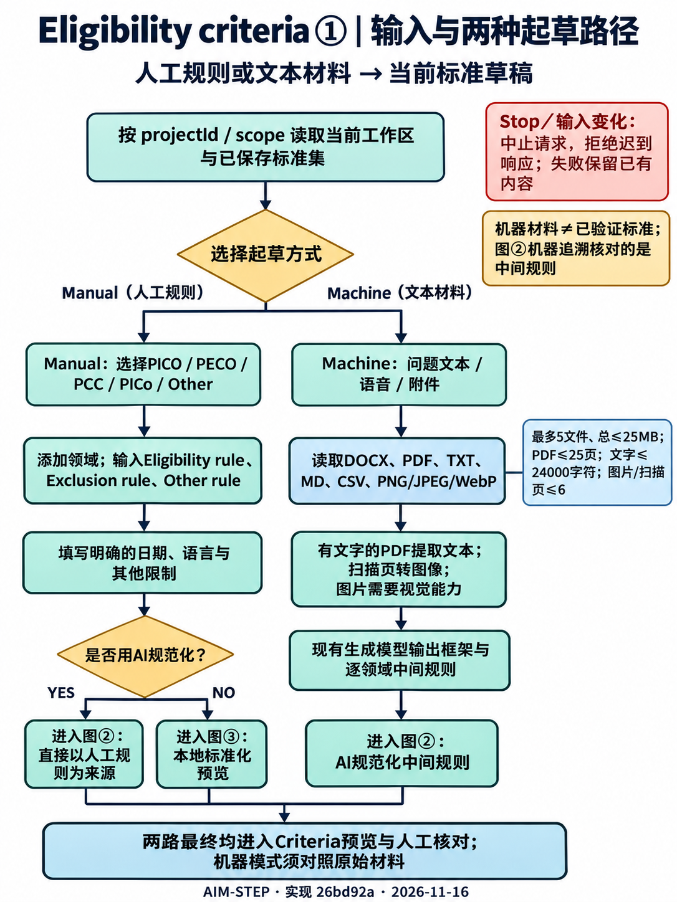
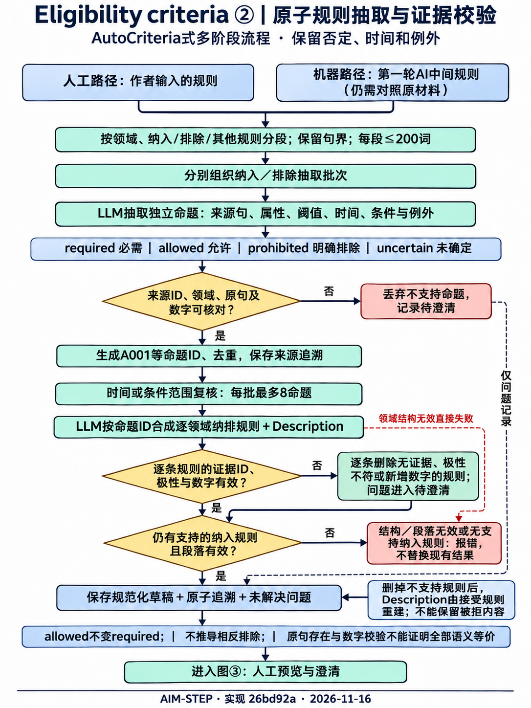
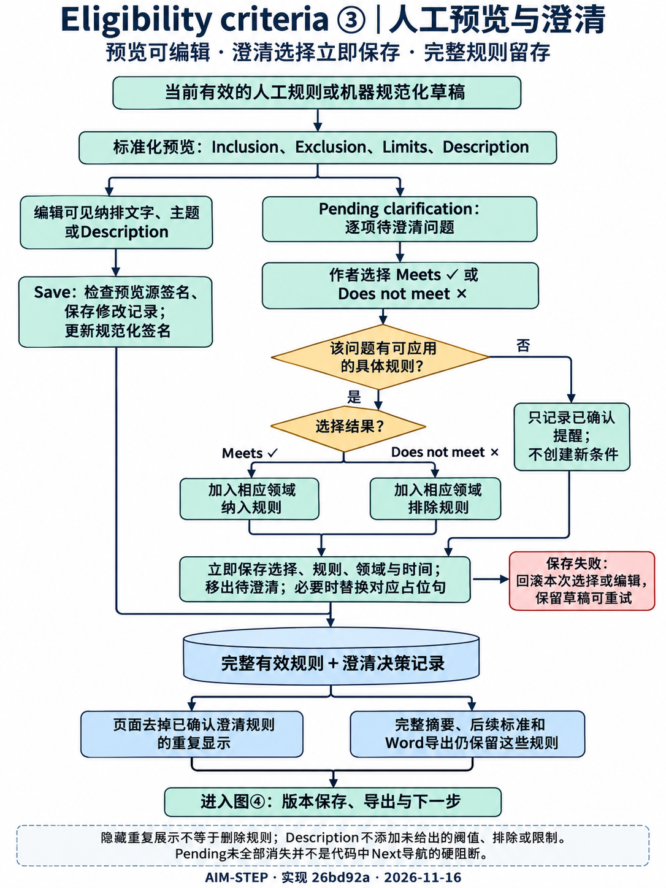
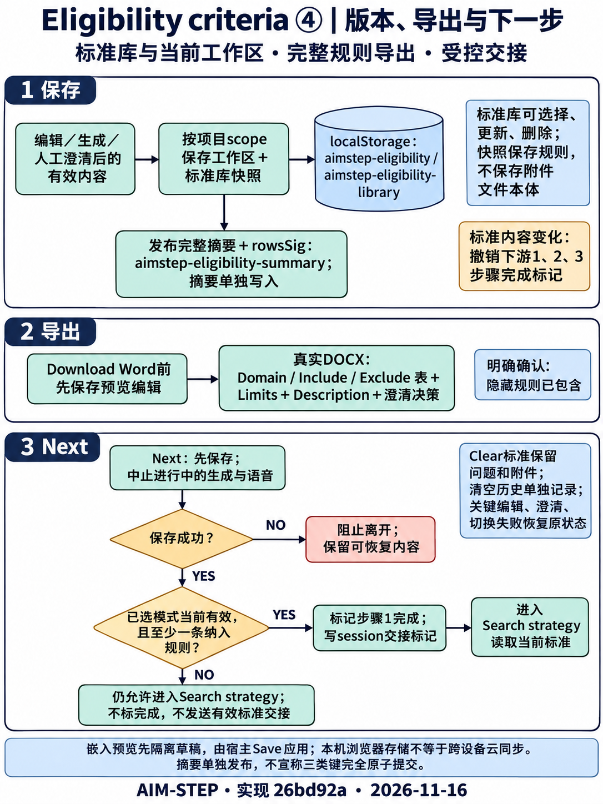

Eligibility criteria 技术流程图
四张图按 1–4 阅读：输入、来源追溯、人工澄清、保存及下游交接。点击图片或“打开原图／放大”查看完整 PNG；手机可双指放大。每图下方可展开文字技术细节及代码依据，无需安装 Mermaid。
Search strategy 图册 · Screening source 图册 · Pilot 与 Main screening 图册 · GitHub 技术路线图档案
下载本模块四张图片、文字细节与可编辑源码（ZIP）1. 输入与两种起草路径
人工领域规则、文本语音及附件输入，区分直接规则与机器中间草稿。


技术细节与代码依据（文字版）
| 工作区与来源 | 按 projectId 或 default 区分工作区。可恢复当前内容、选择标准库历史集，或沿用 Proposal 已保存的共享标准；页面不把任意旧检索快照当作新材料。 |
|---|---|
| Manual | 选择 PICO、PECO、PCC、PICo 或 Other，添加领域；condition 是纳入规则，uncertain 字段在这里保存显式排除规则，definition 保存其他规则、阈值及例外。人工规则可以直接进入本地预览，也可用 Generate 运行规范化。 |
| Machine 输入 | 研究问题文本、浏览器语音转写及最多 5 个附件。支持 DOCX、PDF、TXT、MD、CSV、PNG/JPEG/WebP。总附件不超过 25 MB；图片单件最多 6 MB，其他单件最多 15 MB。附件文件本体只在本次页面内存，不随标准库快照恢复。 |
| 读取限制 | DOCX 从 word/document.xml 读取文本。PDF 最多 25 页，每页文字不足 10 字符时渲染为 JPEG 图像；合计文字不超过 24,000 字符，图片或扫描页不超过 6。图像模式需要模型或后端支持视觉输入。 |
| 模型路径 | 两种起草均使用现有生成服务；在线通过已验证账号的 AI 网关，实际请求指定 provider=local。该路径与标题摘要筛选的 TypeSafe/JEV 接口分开。 |
| 正确性边界 | 机器材料先由模型转成中间规则，再进入图②；后续引用校验不能证明这些中间规则完整等价于原始 PDF 或研究问题。程序会附加人工核对原材料的待澄清提醒。 |
对应函数：prepareSources / readDocx / readPdf / generateMachineCriteria / normalizeMachineCriteria / refineManualCriteria。查看该版本页面代码 · 标准库代码 · 跨工作区保存代码。
2. 原子规则抽取与证据校验
按来源片段抽取命题、保留逻辑和时间范围，再以可追溯命题合成纳排规则。


技术细节与代码依据（文字版）
| 输入与分段 | Manual 的来源是作者字段；Machine 的来源是第一轮 AI 的中间规则。sourceSegments 按领域及字段分开处理，保留句界，以至多 200 词片段建立 S001 等来源标识。 |
|---|---|
| 原子命题 | 抽取 required、allowed、prohibited、uncertain，并保留属性、数值、时间、修饰条件、原句和命题。processExtracts 检查来源 ID、领域、句子出现和数字，按来源/逻辑/命题去重；未覆盖片段记待澄清。 |
| 时间范围 | 有时间触发词的命题按最多 8 条一批复核。非空时间片段须来自该原句；修饰内容中的数字也须有来源。此处理用于保存条件范围，不能证明所有条件关系都正确。 |
| 合成与逐条门控 | 模型按原领域顺序输出 include/exclude 规则及 evidenceIds。缺失或跨领域证据、没有明确 prohibited 依据的排除规则、只凭排除/不确定证据形成的纳入、新增数字和未翻译内容会被删除；结构或段落严重无效时报错。 |
| 冲突与回退 | 同句同时作为纳入及排除时，代码移除其排除版本并提示核对。单条无依据规则不会使整份结果无条件消失；删除后从已接受规则和作者给出的限制重建 Description。未使用命题及问题保留为 uncertainties。 |
| 输出与时效 | 保存来源追溯、模型名、时间及输入签名。只有签名仍匹配才使用该规范化结果；输入变更、Stop 或超时后迟到结果不应用。自动流程与手工规范化均有 10 分钟总超时。 |
对应函数：sourceSegments / extractionBatches / processExtracts / enrichTemporalContext / autoCriteriaPipeline / validateAcademicDraft。查看该版本页面代码 · 标准库代码 · 跨工作区保存代码。
3. 人工预览与澄清
预览编辑、逐项 Meets/Does not meet、立即保存及隐藏重复展示后的规则保留。


技术细节与代码依据（文字版）
| 预览编辑 | 纳排规则、主题和 Description 可编辑。Save 先核对 previewBase 与当前源签名，更新相应原字段、规范化文本签名及 previewEditHistory；并发变化时拒绝覆盖，保存失败恢复此前工作区。 |
|---|---|
| 澄清交互 | 每个待澄清项显示 Meets（✓）或 Does not meet（×）。点击后立即处理并保存该项，无需等待全部问题选择完再执行隐藏的最终确认步骤。 |
| 规则应用 | 有具体规则时，Meets 加入对应领域的 condition，Does not meet 加入 uncertain；缺少领域时可创建该领域。必要时替换该问题对应的模糊占位句；无可用规则的提醒只记录确认，不新建内容。 |
| 决策与回滚 | finalCriteria 记录 item、decision、domain、rule 和时间；resolvedPending 去除已确认问题，相关规范化签名随源更新。失败恢复此前选择和状态并提示重试。 |
| 可见内容与完整内容 | splitVisibleRules/criteriaForPage 为减少重复而隐藏已确认规则的部分前台展示。后台发布完整摘要发生在页面过滤之前；Word 取完整 standardizedCriteria，因此已确认规则继续参与后续使用与导出。 |
| Description 与边界 | 段落是编辑和报告文本，不是独立的另一个执行算法；用户应核对其与结构化规则相同。不得凭空添加限制或由纳入推导互补排除。代码不会因为仍有 Pending 就一律阻止 Next 导航。 |
对应函数：savePreviewEdits / recordPendingChoice / generateFinalCriteria / splitVisibleRules / criteriaForPage / publishCriteriaSummary。查看该版本页面代码 · 标准库代码 · 跨工作区保存代码。
4. 保存、导出与下一步
项目标准库、当前摘要、真正的 DOCX 导出，以及保存成功后的受控交接。


技术细节与代码依据（文字版）
| 项目标准库 | AimstepEligibilityLibrary 保存审核内容快照，按项目记录 activeId、创建/更新时间、人工/机器/Proposal 来源。新生成可以建新集，预览编辑可更新活动集；快照不包含附件文件本体。 |
|---|---|
| 保存事务范围 | 标准库和当前工作区通过成组 localStorage 写入及失败回滚维护。摘要由 shareSummary 独立发布，带 rowsSig 用于防止旧摘要配新规则；不能据此声称所有存储键是单个数据库事务。 |
| 清空与删除 | Clear 当前标准保留问题和附件，记录 criteriaClearHistory，并立即持久保存；关键失败路径恢复原状态。删除活动标准库条目会清空活动规则与摘要，不自动打开另一个历史集。 |
| Word 导出 | 先保存未保存的预览编辑，再生成包含 WordprocessingML 的真实 DOCX。包括 Domain/Include/Exclude 表、Limits、Description 和已确认/尚未应用的澄清选择；完整规则不受前台重复隐藏影响。该功能当前不是多格式 JSON/PDF 导出菜单。 |
| Next 条件 | 先保存并停止进行中的生成/语音。保存失败阻止导航；有明确选择的模式、机器结果与当前材料一致且至少一条非空纳入规则时，才标步骤 1 完成并写 session handoff。空标准仍可导航到 Search strategy，由该页补充标准。 |
| 嵌入和存储边界 | Search/Pilot 预览及全文手工编辑器复用时使用隔离草稿，不自动写上游或标准库，由宿主 Save 应用。当前 localStorage、附件内存和后续 IndexedDB 记录不意味着跨设备同步。 |
对应函数：save / shareSummary / clearPreviewCriteria / criteriaWordFile / saveBeforeToolNavigation；app/eligibility-library.js。查看该版本页面代码 · 标准库代码 · 跨工作区保存代码。
机器路径的自动来源追溯核对中间规则，仍需人工对照原问题及附件。已确认澄清规则在前台隐藏重复展示后，完整摘要和导出仍保留。图像说明当前实现；文字细节、Mermaid 源码及固定代码版本用于核对精确条件。当前浏览器存储不代表跨设备自动同步；生成、核对和合成样本检查不构成真实综述性能验证。